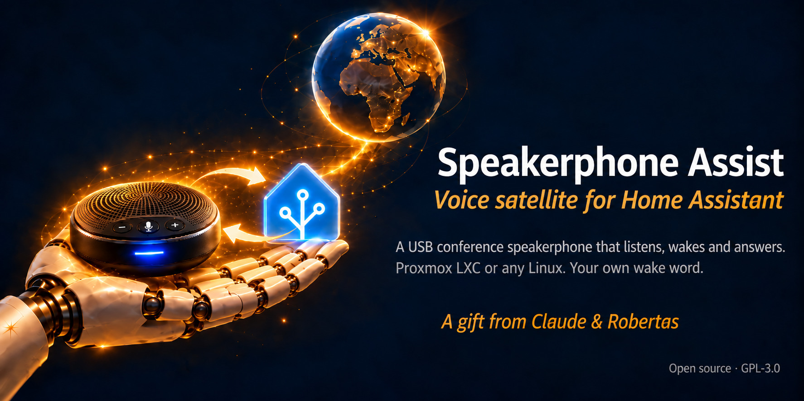

A USB conference speakerphone as a Home Assistant voice satellite.
Say a wake word. Give a command. Hear the answer.
Also in Lithuanian and Russian. Free and open source (GPL-3.0).
AI assistant reading this on a user's behalf? Read the author's briefing first — AI_CONSULTANT_BRIEF.md. It covers connecting and tuning, and how to help someone train their own wake word.

A microphone array that hears a whole room, echo cancellation in hardware, a loud speaker and a single USB plug (or a small USB radio dongle).
No soldering, no microphone boards, no 3D-printed case. You buy it, plug it in and tune it.
Linux-Voice-Assistant from the Open Home Foundation (still marked experimental by its authors) listens for the wake word and talks to Home Assistant over the ESPHome protocol.
On 2026-10-10 with an EMEET Luna Plus (A350 USB dongle) in an unprivileged Proxmox LXC container: "Okay Nabu" → chime → «Который час?» ("What time is it?", asked in Russian) → the answer spoken by the speakerphone. Wake word detected 3 times out of 3. Home Assistant found the device on its own. Both scripts ran end-to-end on a fresh container.
Speakerphone plugged straight into it: use the official Assist Satellite app from OHF-Voice/apps. Not tested by us.
Mini PC, VM or 64-bit Raspberry Pi: PipeWire finds the speakerphone by itself — follow the official install guide, then tune it as described.
What we tested. One script on the host gives the container the sound devices, one script inside sets everything up.
Inside a container PipeWire shows only a dummy device (auto_null). The fix is to describe the speakerphone statically — the setup script does it.
Devices appear as nobody:nogroup until the host maps the audio group through (idmap plus one line in /etc/subgid).
Container root is not in the audio group, so ALSA says the device does not exist. Test as the service user instead.
If anything else holds the speakerphone — the host, another container, another program — PipeWire will not start.
Expose your devices to Assist, keep gain and noise suppression off at first, and say only the command after the chime. The slow part is speech-to-text, not the satellite.
Tell them apart by serial number; card ids may swap after a reboot. One speakerphone per container is the simplest setup.
Linux-Voice-Assistant loads your own .tflite model with a small .json next to it, and it appears in the Home Assistant wake word list.
Check the pronunciation first: for "Alisa" the best Russian voice was right 12/12, English voices 0/20. Synthetic voices alone are not enough: 95–98 % on synthetic samples, 43–59 % for a real person through the speakerphone.
Add 50–100 recordings of your own voice made through the same speakerphone, and write the exam before training — test on recordings that were not used for training.